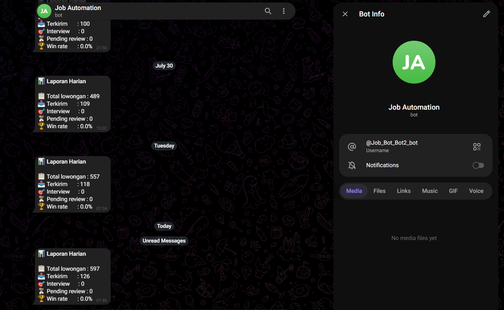
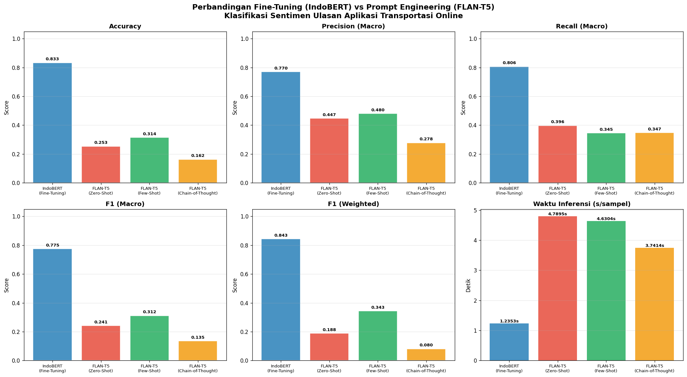
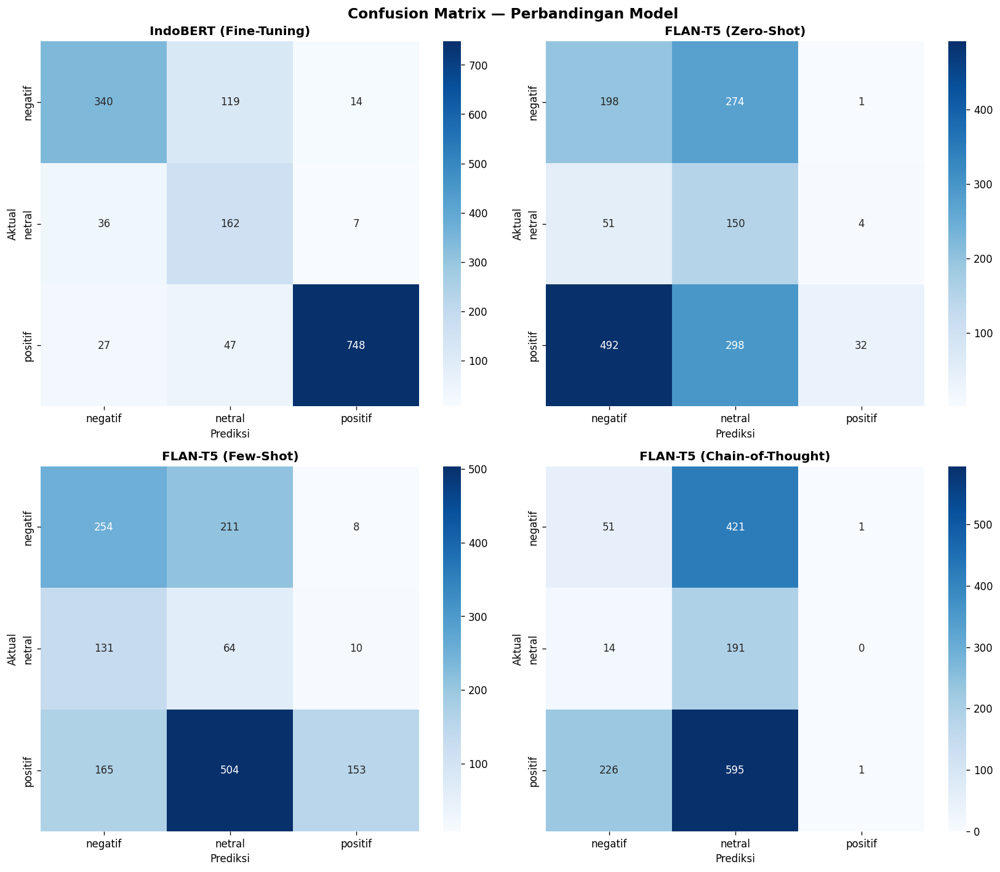
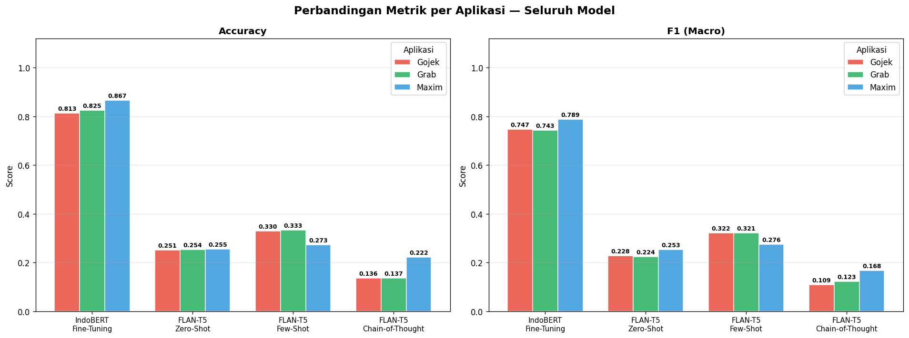

ls ./work
Two projects, two proofs.
One shows I can ship a system that runs unattended in production. The other shows I can do the research rigor behind it — honestly, including where it didn't work.
Job Application Automation Pipeline
A pipeline that scans job listings on Jobstreet, scores fit locally with an LLM, and notifies me on Telegram — running unattended, not a one-off script.
How it works
Playwright drives a real browser session against Jobstreet to find and read new listings. Each listing is scored for fit by an LLM running locally through Ollama — no data leaves the machine, no API cost per run. Listings that clear the bar trigger a Telegram notification, so the review step stays in my hands rather than fully auto-applying blind.
What it reports — and what I actually claim
The bot's daily report logs five numbers: total listings scanned, applications sent, interviews, pending reviews, and win rate. Only the first two — total jobs scanned and applications sent — are claimed here as proof of what the pipeline does. Win rate and interview count depend on employer-side decisions the system has no control over, so I don't present them as a measure of the pipeline's performance, even though the bot logs them by default.

Sentiment Analysis: IndoBERT vs FLAN-T5
Undergraduate thesis comparing fine-tuning against prompt engineering for Indonesian-language sentiment analysis of ride-hailing app reviews.
Setup
The question was whether prompting a general-purpose model can match a model fine-tuned specifically for Indonesian text. IndoBERT was fine-tuned directly on the review data. FLAN-T5 was tested with three prompting strategies — zero-shot, few-shot, and Chain-of-Thought — with no additional training.
Result, and the honest root cause
IndoBERT fine-tuning led clearly at 83.3% accuracy (F1 macro 0.775). Among the FLAN-T5 prompting strategies, few-shot performed best (31.4% accuracy) — after I fixed an earlier bug where the few-shot examples were written in English against Indonesian inputs, few-shot actually edged out zero-shot (25.3%) once the language mismatch was corrected. Chain-of-Thought performed worst (16.2%), and the confusion matrix shows why: the model collapsed toward predicting "netral" for most inputs — including 595 of 822 actually-positive reviews — rather than failing to produce a parseable answer. The reasoning steps didn't add signal; they added a bias toward one class.



charts --loading
Three result charts (accuracy by method, confusion matrix, per-platform breakdown) go here.